<!DOCTYPE html>


  


<html class="theme-next muse use-motion" lang="en">
<head><meta name="generator" content="Hexo 3.9.0">
  <meta charset="UTF-8">
<meta http-equiv="X-UA-Compatible" content="IE=edge">
<meta name="viewport" content="width=device-width, initial-scale=1, maximum-scale=1">
<meta name="theme-color" content="#222">


<meta http-equiv="Cache-Control" content="no-transform">
<meta http-equiv="Cache-Control" content="no-siteapp">


  
  
  <link href="/lib/fancybox/source/jquery.fancybox.css?v=2.1.5" rel="stylesheet" type="text/css">


<link href="/lib/font-awesome/css/font-awesome.min.css?v=4.6.2" rel="stylesheet" type="text/css">

<link href="/css/main.css?v=5.1.4" rel="stylesheet" type="text/css">


  <link rel="apple-touch-icon" sizes="180x180" href="/images/apple-touch-icon-next.png?v=5.1.4">


  <link rel="icon" type="image/png" sizes="32x32" href="/images/favicon-32x32-next.png?v=5.1.4">


  <link rel="icon" type="image/png" sizes="16x16" href="/images/favicon-16x16-next.png?v=5.1.4">


  <link rel="mask-icon" href="/images/logo.svg?v=5.1.4" color="#222">


  <meta name="keywords" content="Hexo, NexT">


<meta name="description" content="baby-bugku第一次独立做出来一道题 掩藏不住的兴奋首先下载我们的zip文件 解压 得到可执行程序baby.exe扔进ida中反汇编 f5搜寻伪代码 用尽所有的办法得到足够多的信息shift+f12:  发现有很多mov了很多的东西进栈 字符串窗口和函数print出来的Hi~ this is a babyre 并不是flag 那么就将mov的十六进制数转为字符 也在OD中查询这些字符串 以">
<meta property="og:type" content="article">
<meta property="og:title" content="bugku">
<meta property="og:url" content="http://yoursite.com/2019/06/01/bugku/index.html">
<meta property="og:site_name" content="Aizlm_blog">
<meta property="og:description" content="baby-bugku第一次独立做出来一道题 掩藏不住的兴奋首先下载我们的zip文件 解压 得到可执行程序baby.exe扔进ida中反汇编 f5搜寻伪代码 用尽所有的办法得到足够多的信息shift+f12:  发现有很多mov了很多的东西进栈 字符串窗口和函数print出来的Hi~ this is a babyre 并不是flag 那么就将mov的十六进制数转为字符 也在OD中查询这些字符串 以">
<meta property="og:locale" content="en">
<meta property="og:image" content="http://yoursite.com/2019/06/01/bugku/ba-1.png">
<meta property="og:image" content="http://yoursite.com/2019/06/01/bugku/ba-2.png">
<meta property="og:image" content="http://yoursite.com/2019/06/01/bugku/ba-3.png">
<meta property="og:image" content="http://yoursite.com/2019/06/01/bugku/ba-4.png">
<meta property="og:image" content="http://yoursite.com/2019/06/01/bugku/ba-5.png">
<meta property="og:image" content="http://yoursite.com/2019/06/01/bugku/ba-6.png">
<meta property="og:image" content="http://yoursite.com/2019/06/01/bugku/vb-1.png">
<meta property="og:image" content="http://yoursite.com/2019/06/01/bugku/re-0.png">
<meta property="og:image" content="http://yoursite.com/2019/06/01/bugku/re-2.png">
<meta property="og:image" content="http://yoursite.com/2019/06/01/bugku/re-1.png">
<meta property="og:image" content="http://yoursite.com/2019/06/01/bugku/admin-1.png">
<meta property="og:image" content="http://yoursite.com/2019/06/01/bugku/admin-2.png">
<meta property="og:image" content="http://yoursite.com/2019/06/01/bugku/admin-3.png">
<meta property="og:image" content="http://yoursite.com/2019/06/01/bugku/admin-4.png">
<meta property="og:image" content="http://yoursite.com/2019/06/01/bugku/admin-5.png">
<meta property="og:image" content="http://yoursite.com/2019/06/01/bugku/admin-6.png">
<meta property="og:image" content="http://yoursite.com/2019/06/01/bugku/love-1.png">
<meta property="og:image" content="http://yoursite.com/2019/06/01/bugku/love-2.png">
<meta property="og:image" content="http://yoursite.com/2019/06/01/bugku/love-3.png">
<meta property="og:image" content="http://yoursite.com/2019/06/01/bugku/love-4.png">
<meta property="og:updated_time" content="2019-06-09T08:47:26.000Z">
<meta name="twitter:card" content="summary">
<meta name="twitter:title" content="bugku">
<meta name="twitter:description" content="baby-bugku第一次独立做出来一道题 掩藏不住的兴奋首先下载我们的zip文件 解压 得到可执行程序baby.exe扔进ida中反汇编 f5搜寻伪代码 用尽所有的办法得到足够多的信息shift+f12:  发现有很多mov了很多的东西进栈 字符串窗口和函数print出来的Hi~ this is a babyre 并不是flag 那么就将mov的十六进制数转为字符 也在OD中查询这些字符串 以">
<meta name="twitter:image" content="http://yoursite.com/2019/06/01/bugku/ba-1.png">


<script type="text/javascript" id="hexo.configurations">
  var NexT = window.NexT || {};
  var CONFIG = {
    root: '/',
    scheme: 'Muse',
    version: '5.1.4',
    sidebar: {"position":"left","display":"post","offset":12,"b2t":false,"scrollpercent":false,"onmobile":false},
    fancybox: true,
    tabs: true,
    motion: {"enable":true,"async":false,"transition":{"post_block":"fadeIn","post_header":"slideDownIn","post_body":"slideDownIn","coll_header":"slideLeftIn","sidebar":"slideUpIn"}},
    duoshuo: {
      userId: '0',
      author: 'Author'
    },
    algolia: {
      applicationID: '',
      apiKey: '',
      indexName: '',
      hits: {"per_page":10},
      labels: {"input_placeholder":"Search for Posts","hits_empty":"We didn't find any results for the search: ${query}","hits_stats":"${hits} results found in ${time} ms"}
    }
  };
</script>


  <link rel="canonical" href="http://yoursite.com/2019/06/01/bugku/">


  <title>bugku | Aizlm_blog</title>
  


</head>

<body itemscope itemtype="http://schema.org/WebPage" lang="en">

  
  
    
  

  <div class="container sidebar-position-left page-post-detail">
    <div class="headband"></div>

    <header id="header" class="header" itemscope itemtype="http://schema.org/WPHeader">
      <div class="header-inner"><div class="site-brand-wrapper">
  <div class="site-meta ">
    

    <div class="custom-logo-site-title">
      <a href="/" class="brand" rel="start">
        <span class="logo-line-before"><i></i></span>
        <span class="site-title">Aizlm_blog</span>
        <span class="logo-line-after"><i></i></span>
      </a>
    </div>
      
        <p class="site-subtitle"></p>
      
  </div>

  <div class="site-nav-toggle">
    <button>
      <span class="btn-bar"></span>
      <span class="btn-bar"></span>
      <span class="btn-bar"></span>
    </button>
  </div>
</div>

<nav class="site-nav">
  

  
    <ul id="menu" class="menu">
      
        
        <li class="menu-item menu-item-home">
          <a href="/" rel="section">
            
              <i class="menu-item-icon fa fa-fw fa-home"></i> <br>
            
            Home
          </a>
        </li>
      
        
        <li class="menu-item menu-item-archives">
          <a href="/archives/" rel="section">
            
              <i class="menu-item-icon fa fa-fw fa-archive"></i> <br>
            
            Archives
          </a>
        </li>
      

      
    </ul>
  

  
</nav>


 </div>
    </header>

    <main id="main" class="main">
      <div class="main-inner">
        <div class="content-wrap">
          <div id="content" class="content">
            

  <div id="posts" class="posts-expand">
    

  

  
  
  

  <article class="post post-type-normal" itemscope itemtype="http://schema.org/Article">
  
  
  
  <div class="post-block">
    <link itemprop="mainEntityOfPage" href="http://yoursite.com/2019/06/01/bugku/">

    <span hidden itemprop="author" itemscope itemtype="http://schema.org/Person">
      <meta itemprop="name" content="aizlm_Lin">
      <meta itemprop="description" content>
      <meta itemprop="image" content="/images/avatar.gif">
    </span>

    <span hidden itemprop="publisher" itemscope itemtype="http://schema.org/Organization">
      <meta itemprop="name" content="Aizlm_blog">
    </span>

    
      <header class="post-header">

        
        
          <h1 class="post-title" itemprop="name headline">bugku</h1>
        

        <div class="post-meta">
          <span class="post-time">
            
              <span class="post-meta-item-icon">
                <i class="fa fa-calendar-o"></i>
              </span>
              
                <span class="post-meta-item-text">Posted on</span>
              
              <time title="Post created" itemprop="dateCreated datePublished" datetime="2019-06-01T18:52:38+08:00">
                2019-06-01
              </time>
            

            

            
          </span>

          

          
            
          

          
          

          

          

          

        </div>
      </header>
    

    
    
    
    <div class="post-body" itemprop="articleBody">

      
      

      
        <h1 id="baby-bugku"><a href="#baby-bugku" class="headerlink" title="baby-bugku"></a>baby-bugku</h1><h3 id="第一次独立做出来一道题-掩藏不住的兴奋"><a href="#第一次独立做出来一道题-掩藏不住的兴奋" class="headerlink" title="第一次独立做出来一道题 掩藏不住的兴奋"></a>第一次独立做出来一道题 掩藏不住的兴奋</h3><p>首先下载我们的zip文件 解压 得到可执行程序baby.exe<br>扔进ida中反汇编 f5搜寻伪代码 用尽所有的办法得到足够多的信息<br>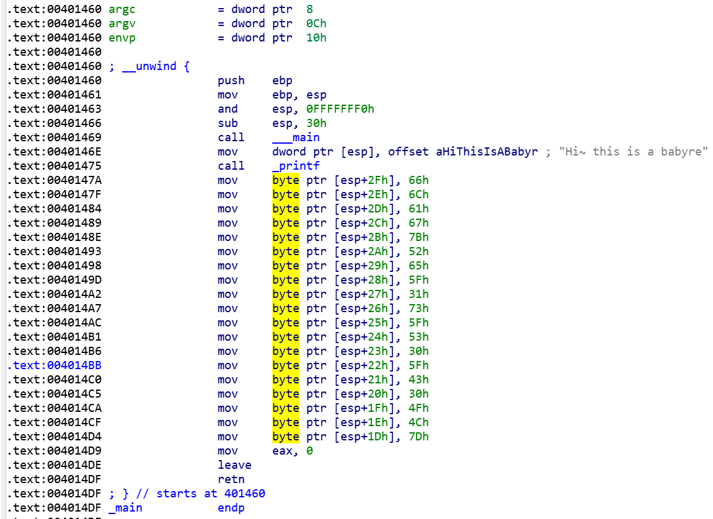<br>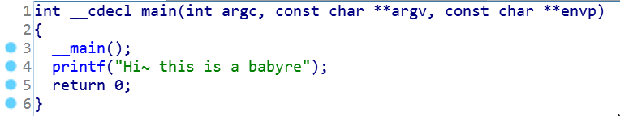<br>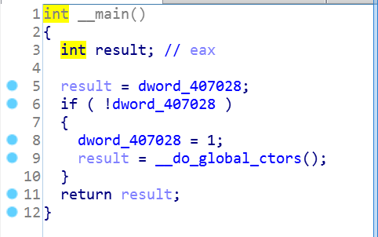<br>shift+f12:<br>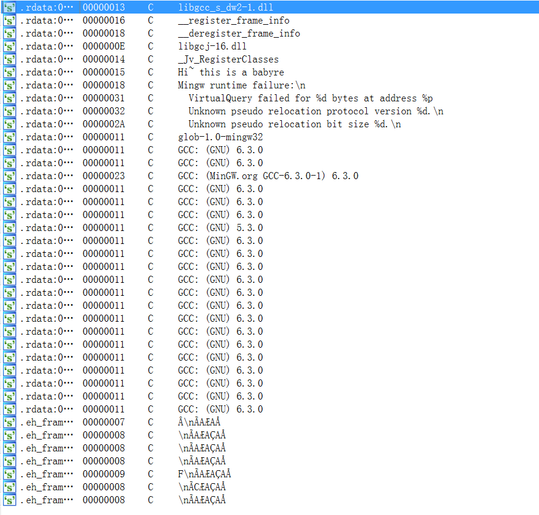</p>
<blockquote>
<p>发现有很多mov了很多的东西进栈 字符串窗口和函数print出来的Hi~ this is a babyre 并不是flag 那么就将mov的十六进制数转为字符 也在OD中查询这些字符串 以防止将程序将flag用作代码运行(这里字符串窗口没有 要么用作代码运行 要么没有存入内存中) 搜索时 用binary strings转化这些十六进制位:<br>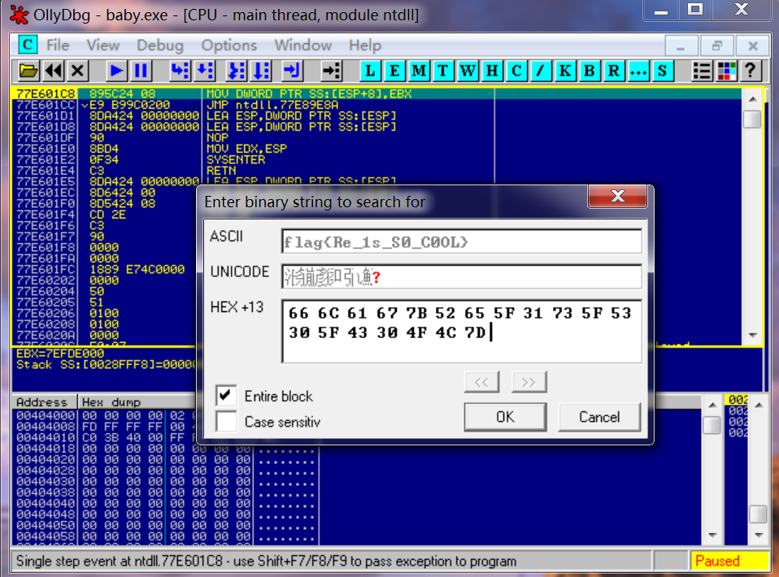<br>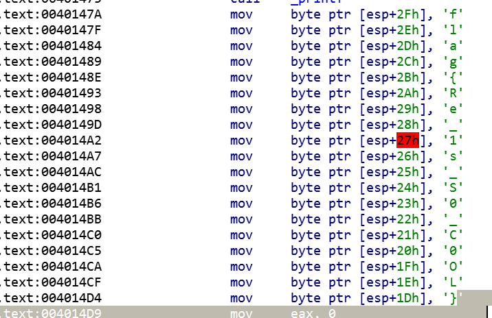<br>输入flag:flag{Re_1s_S0_C0OL}<br>correct!</p>
</blockquote>
<h1 id="easy-vb-bugku"><a href="#easy-vb-bugku" class="headerlink" title="easy_vb-bugku"></a>easy_vb-bugku</h1><p>这题在ida中只显示了一个函数 所以没什么头绪 strings窗口中没有可疑的字符串<br>OD的应用还在学习当中<br>通过网上查找 这题是相当的简单 通过OD搜索被引用的字符串 查找定位到:<br>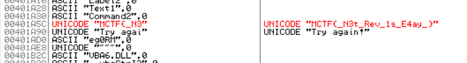<br>得出原来题目的flag:MCTF{<em>N3t_Rev_1s_E4ay</em>}<br>然而在bugku中输入不正确 题目提示flag{xxxx} 所以替换掉后 输入:<br>flag{<em>N3t_Rev_1s_E4ay</em>}<br>correct!</p>
<h1 id="re1-exe"><a href="#re1-exe" class="headerlink" title="re1.exe"></a>re1.exe</h1><p>这题是xctf做过的原题<br>按照以前的思路 打开运行文件 只有叫我输入flag 就没其他的信息了<br>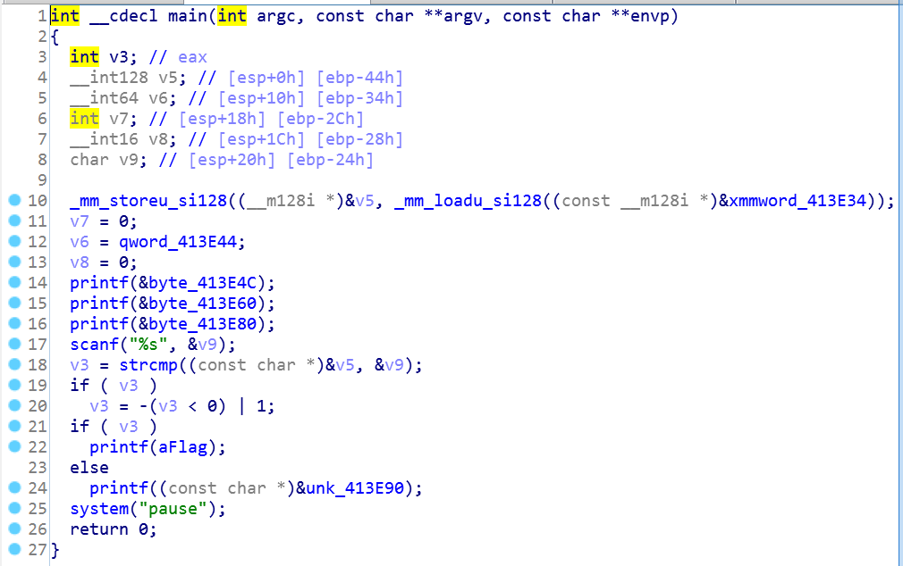<br>所以用ida打开 查看源码 发现若v5与v9(自己输入的)相等的话 就得到flag 说明内存中有flag的值<br>在hex窗口中发现flag:<br>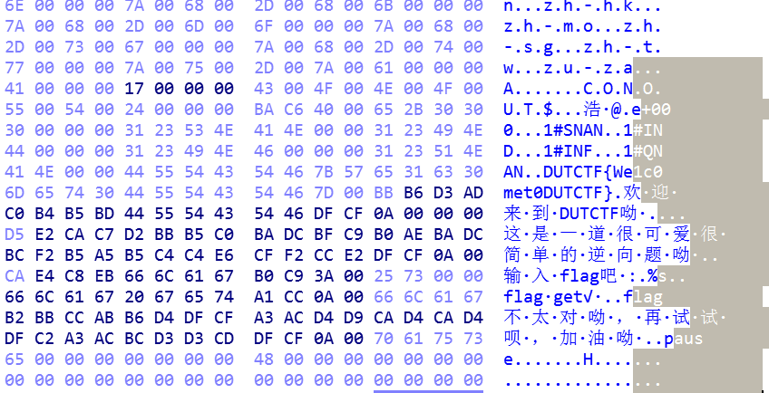<br>还有在文本编辑器中可以找到 “/“查询字符模式<br>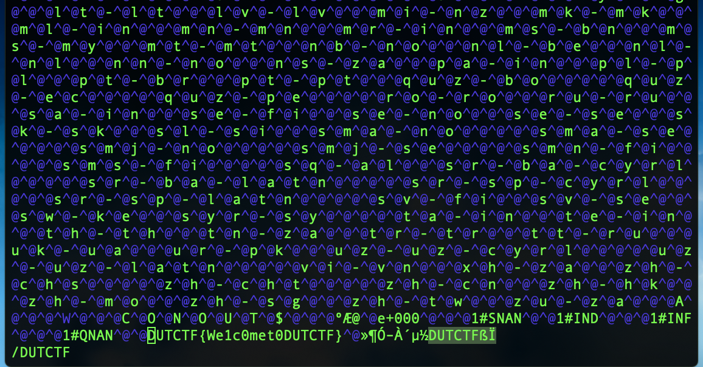<br>flag: DUTCTF{Welc0met0DUTCTF}</p>
<h1 id="consoleApplication4"><a href="#consoleApplication4" class="headerlink" title="consoleApplication4"></a>consoleApplication4</h1><p>这题攻防世界2-game原题<br>思路:可以选择把游戏玩通关 12345678、87654321 得到flag    | |    利用ida得到源码会发现有三个条件 写出脚本得到flag</p>
<h1 id="逆向入门-admin-exe"><a href="#逆向入门-admin-exe" class="headerlink" title="逆向入门-admin.exe"></a>逆向入门-admin.exe</h1><p>首先在win7中打不开应用程序 我以为是我版本问题 查了网上 基本都是这样子的 那就没啥信息了<br>然后将程序扔入ida中 看了没有函数 以为加壳了 查了PEID 显示不是一个PE文件<br>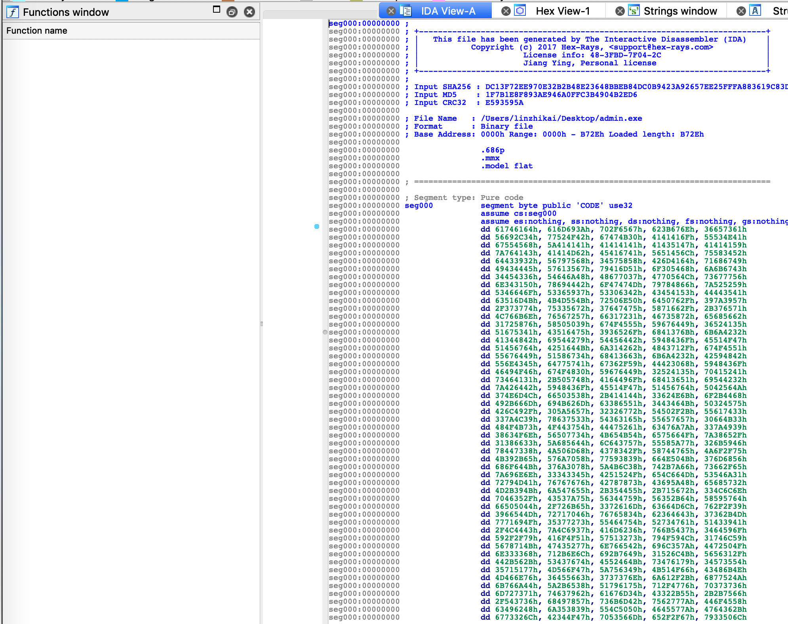<br>查了资料是说它不是一个可移植性的可执行文件 简单的说就是在微软操作系统下是打不开的 那就当作没加壳 加了也没啥用 本来就不可执行 加了感觉用处不大<br>然后查看hex views 和strings window:<br>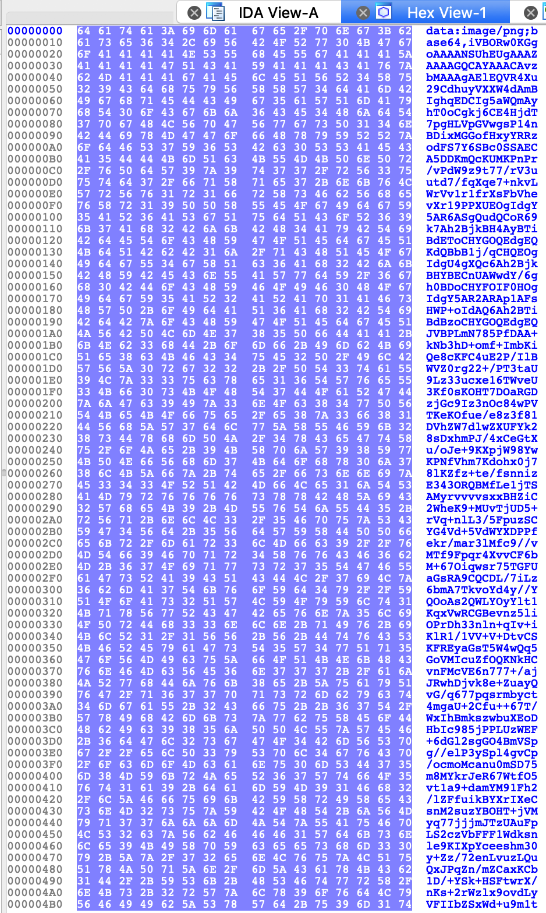<br>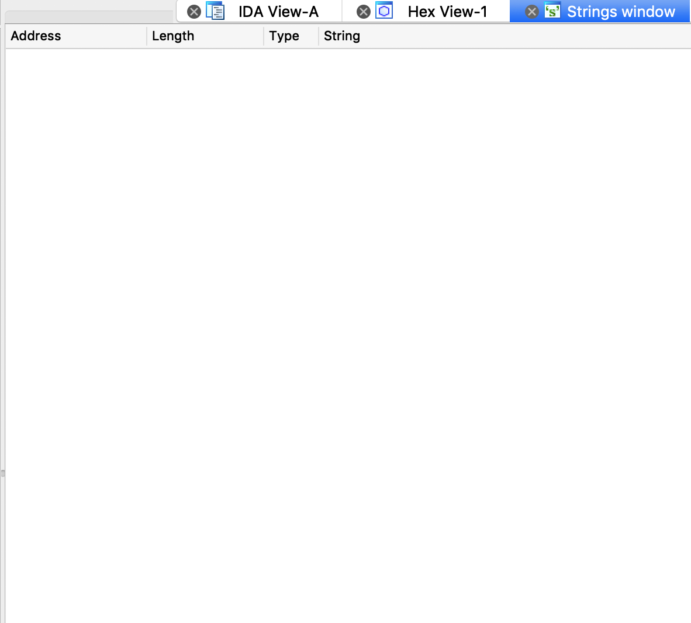<br>啥都没有 找别的途径 看一下这个程序文本编辑下的内容 从terminal中打开:<br>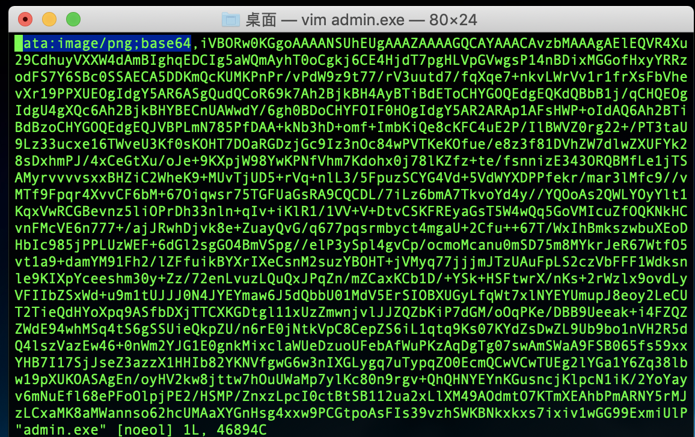<br>发现了这是一个被bash64加密过后的图片 经过解密会得到这么一个图片:<br><br>扫码:<br><br>bugku{inde_9882ihsd8-0}</p>
<h1 id="love"><a href="#love" class="headerlink" title="love"></a>love</h1><p>这几天经历了mac上安装gdb的失败 一度认为我是个白痴 直到后面意识到是文件的问题 然后就自闭了<br>首先这题打开源码:</p>
<figure class="highlight php"><table><tr><td class="gutter"><pre><span class="line">1</span><br><span class="line">2</span><br><span class="line">3</span><br><span class="line">4</span><br><span class="line">5</span><br><span class="line">6</span><br><span class="line">7</span><br><span class="line">8</span><br><span class="line">9</span><br><span class="line">10</span><br><span class="line">11</span><br><span class="line">12</span><br><span class="line">13</span><br><span class="line">14</span><br><span class="line">15</span><br><span class="line">16</span><br><span class="line">17</span><br><span class="line">18</span><br><span class="line">19</span><br><span class="line">20</span><br><span class="line">21</span><br><span class="line">22</span><br><span class="line">23</span><br><span class="line">24</span><br><span class="line">25</span><br><span class="line">26</span><br><span class="line">27</span><br><span class="line">28</span><br><span class="line">29</span><br><span class="line">30</span><br><span class="line">31</span><br><span class="line">32</span><br><span class="line">33</span><br><span class="line">34</span><br><span class="line">35</span><br><span class="line">36</span><br><span class="line">37</span><br></pre></td><td class="code"><pre><span class="line">__int64 __cdecl main_0()</span><br><span class="line">&#123;</span><br><span class="line">int v0; <span class="comment">// eax</span></span><br><span class="line"><span class="keyword">const</span> char *v1; <span class="comment">// eax</span></span><br><span class="line">size_t v2; <span class="comment">// eax</span></span><br><span class="line">int v3; <span class="comment">// edx</span></span><br><span class="line">__int64 v4; <span class="comment">// ST08_8</span></span><br><span class="line">signed int j; <span class="comment">// [esp+DCh] [ebp-ACh]</span></span><br><span class="line">signed int i; <span class="comment">// [esp+E8h] [ebp-A0h]</span></span><br><span class="line">signed int v8; <span class="comment">// [esp+E8h] [ebp-A0h]</span></span><br><span class="line">char Dest[<span class="number">108</span>]; <span class="comment">// [esp+F4h] [ebp-94h]</span></span><br><span class="line">char Str; <span class="comment">// [esp+160h] [ebp-28h]</span></span><br><span class="line">char v11; <span class="comment">// [esp+17Ch] [ebp-Ch]</span></span><br><span class="line"></span><br><span class="line"><span class="keyword">for</span> ( i = <span class="number">0</span>; i &lt; <span class="number">100</span>; ++i )</span><br><span class="line">&#123;</span><br><span class="line"><span class="keyword">if</span> ( i &gt;= <span class="number">0x64</span> )</span><br><span class="line">j____report_rangecheckfailure();</span><br><span class="line">Dest[i] = <span class="number">0</span>;</span><br><span class="line">&#125;</span><br><span class="line">sub_41132F(<span class="string">"please enter the flag:"</span>);</span><br><span class="line">sub_411375(<span class="string">"%20s"</span>, &amp;Str);</span><br><span class="line">v0 = j_strlen(&amp;Str);</span><br><span class="line">v1 = sub_4110BE(&amp;Str, v0, &amp;v11);</span><br><span class="line">strncpy(Dest, v1, <span class="number">0x28</span>u);</span><br><span class="line">v8 = j_strlen(Dest);</span><br><span class="line"><span class="keyword">for</span> ( j = <span class="number">0</span>; j &lt; v8; ++j )</span><br><span class="line">Dest[j] += j;</span><br><span class="line">v2 = j_strlen(Dest);</span><br><span class="line"><span class="keyword">if</span> ( !strncmp(Dest, Str2, v2) )</span><br><span class="line">sub_41132F(<span class="string">"rigth flag!\n"</span>);</span><br><span class="line"><span class="keyword">else</span></span><br><span class="line">sub_41132F(<span class="string">"wrong flag!\n"</span>);</span><br><span class="line">HIDWORD(v4) = v3;</span><br><span class="line">LODWORD(v4) = <span class="number">0</span>;</span><br><span class="line"><span class="keyword">return</span> v4;</span><br><span class="line">&#125;</span><br></pre></td></tr></table></figure>

<p>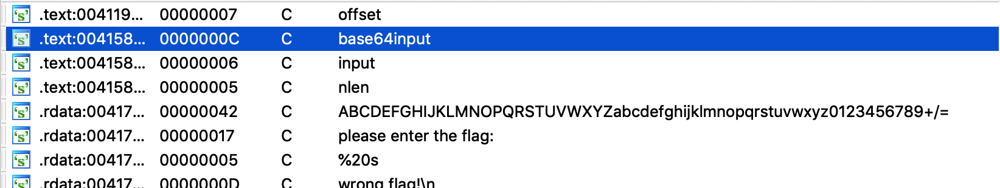<br>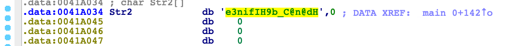<br>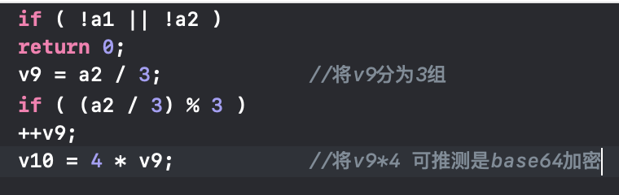<br>在ida中所得到的信息 在源码中看到有对最后要比较的Dest进行加密 这里是先将Str加密后赋值给v1 后再复制给Dest 在strings window中看到有进行base64加密 进入sub_4110BE函数跟进后 确认是base64加密</p>
<figure class="highlight php"><table><tr><td class="gutter"><pre><span class="line">1</span><br><span class="line">2</span><br></pre></td><td class="code"><pre><span class="line"><span class="keyword">for</span> ( j = <span class="number">0</span>; j &lt; v8; ++j )</span><br><span class="line">Dest[j] += j;</span><br></pre></td></tr></table></figure>

<p>再往下看源码 for语句中将Dest数组中的字符串移位了 所以在脚本中先将加密后的字符复位在进行base64解密就可以了<br>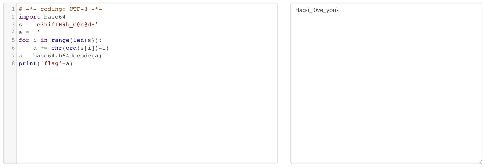<br>flag{i_l0ve_you}</p>

      
    </div>
    
    
    

    

    

    

    <footer class="post-footer">
      

      
      
      

      
        <div class="post-nav">
          <div class="post-nav-next post-nav-item">
            
              <a href="/2019/05/31/iscc-reverse/" rel="next" title="iscc-reverse">
                <i class="fa fa-chevron-left"></i> iscc-reverse
              </a>
            
          </div>

          <span class="post-nav-divider"></span>

          <div class="post-nav-prev post-nav-item">
            
              <a href="/2019/06/03/ssctf/" rel="prev" title="ssctf">
                ssctf <i class="fa fa-chevron-right"></i>
              </a>
            
          </div>
        </div>
      

      
      
    </footer>
  </div>
  
  
  
  </article>


    <div class="post-spread">
      
    </div>
  </div>


          </div>
          


          

  


        </div>
        
          
  
  <div class="sidebar-toggle">
    <div class="sidebar-toggle-line-wrap">
      <span class="sidebar-toggle-line sidebar-toggle-line-first"></span>
      <span class="sidebar-toggle-line sidebar-toggle-line-middle"></span>
      <span class="sidebar-toggle-line sidebar-toggle-line-last"></span>
    </div>
  </div>

  <aside id="sidebar" class="sidebar">
    
    <div class="sidebar-inner">

      

      
        <ul class="sidebar-nav motion-element">
          <li class="sidebar-nav-toc sidebar-nav-active" data-target="post-toc-wrap">
            Table of Contents
          </li>
          <li class="sidebar-nav-overview" data-target="site-overview-wrap">
            Overview
          </li>
        </ul>
      

      <section class="site-overview-wrap sidebar-panel">
        <div class="site-overview">
          <div class="site-author motion-element" itemprop="author" itemscope itemtype="http://schema.org/Person">
            
              <p class="site-author-name" itemprop="name">aizlm_Lin</p>
              <p class="site-description motion-element" itemprop="description"></p>
          </div>

          <nav class="site-state motion-element">

            
              <div class="site-state-item site-state-posts">
              
                <a href="/archives/">
              
                  <span class="site-state-item-count">32</span>
                  <span class="site-state-item-name">posts</span>
                </a>
              </div>
            

            

            

          </nav>

          

          

          
          

          
          

          

        </div>
      </section>

      
      <!--noindex-->
        <section class="post-toc-wrap motion-element sidebar-panel sidebar-panel-active">
          <div class="post-toc">

            
              
            

            
              <div class="post-toc-content"><ol class="nav"><li class="nav-item nav-level-1"><a class="nav-link" href="#baby-bugku"><span class="nav-number">1.</span> <span class="nav-text">baby-bugku</span></a><ol class="nav-child"><li class="nav-item nav-level-3"><a class="nav-link" href="#第一次独立做出来一道题-掩藏不住的兴奋"><span class="nav-number">1.0.1.</span> <span class="nav-text">第一次独立做出来一道题 掩藏不住的兴奋</span></a></li></ol></li></ol><li class="nav-item nav-level-1"><a class="nav-link" href="#easy-vb-bugku"><span class="nav-number">2.</span> <span class="nav-text">easy_vb-bugku</span></a></li><li class="nav-item nav-level-1"><a class="nav-link" href="#re1-exe"><span class="nav-number">3.</span> <span class="nav-text">re1.exe</span></a></li><li class="nav-item nav-level-1"><a class="nav-link" href="#consoleApplication4"><span class="nav-number">4.</span> <span class="nav-text">consoleApplication4</span></a></li><li class="nav-item nav-level-1"><a class="nav-link" href="#逆向入门-admin-exe"><span class="nav-number">5.</span> <span class="nav-text">逆向入门-admin.exe</span></a></li><li class="nav-item nav-level-1"><a class="nav-link" href="#love"><span class="nav-number">6.</span> <span class="nav-text">love</span></a></li></div>
            

          </div>
        </section>
      <!--/noindex-->
      

      

    </div>
  </aside>


        
      </div>
    </main>

    <footer id="footer" class="footer">
      <div class="footer-inner">
        <div class="copyright">&copy; <span itemprop="copyrightYear">2019</span>
  <span class="with-love">
    <i class="fa fa-user"></i>
  </span>
  <span class="author" itemprop="copyrightHolder">aizlm_Lin</span>

  
</div>


  <div class="powered-by">Powered by <a class="theme-link" target="_blank" href="https://hexo.io">Hexo</a></div>


  <span class="post-meta-divider">|</span>


  <div class="theme-info">Theme &mdash; <a class="theme-link" target="_blank" href="https://github.com/iissnan/hexo-theme-next">NexT.Muse</a> v5.1.4</div>


        


        
      </div>
    </footer>

    
      <div class="back-to-top">
        <i class="fa fa-arrow-up"></i>
        
      </div>
    

    

  </div>

  

<script type="text/javascript">
  if (Object.prototype.toString.call(window.Promise) !== '[object Function]') {
    window.Promise = null;
  }
</script>


  


  
  
    <script type="text/javascript" src="/lib/jquery/index.js?v=2.1.3"></script>
  

  
  
    <script type="text/javascript" src="/lib/fastclick/lib/fastclick.min.js?v=1.0.6"></script>
  

  
  
    <script type="text/javascript" src="/lib/jquery_lazyload/jquery.lazyload.js?v=1.9.7"></script>
  

  
  
    <script type="text/javascript" src="/lib/velocity/velocity.min.js?v=1.2.1"></script>
  

  
  
    <script type="text/javascript" src="/lib/velocity/velocity.ui.min.js?v=1.2.1"></script>
  

  
  
    <script type="text/javascript" src="/lib/fancybox/source/jquery.fancybox.pack.js?v=2.1.5"></script>
  


  


  <script type="text/javascript" src="/js/src/utils.js?v=5.1.4"></script>

  <script type="text/javascript" src="/js/src/motion.js?v=5.1.4"></script>


  
  

  
  <script type="text/javascript" src="/js/src/scrollspy.js?v=5.1.4"></script>
<script type="text/javascript" src="/js/src/post-details.js?v=5.1.4"></script>


  


  <script type="text/javascript" src="/js/src/bootstrap.js?v=5.1.4"></script>


  


  


	


  


  


  


  

  

  

  
  

  

  

  

</body>
</html>
